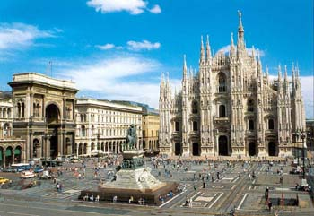
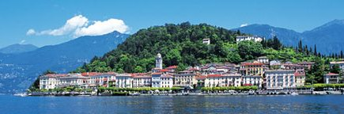

Put u Italiju, prvi deo
Gost post: Abraka Dabar
Poseta Italiji ili kako se ide na službeni put sa vlasnikom firme u kojoj radiš
Sve je krenulo uveče 29.12.2006. kada sam došao sa kontra-proslave Nove Godine koju su organizovali odmetnuti radnici (F)irme nezadovoljni smešno malom poslednjom platom na izmaku inače najuspešnije poslovne godine. Posle pet piva koje sam tamo popio u roku od sat vremena došao sam na zvaničnu proslavu F, dohvatio (R)obovlasnika i onako pijan u trajanju od nekih dva sata sasuo mu u lice sve što mislim o njegovom načinu poslovanja, upravljanju F i o njemu kao čoveku. Kad sam završio, R mi je rekao da sam u postavi za službeni put u Italiju.
Ostali članovi posade: R, R-ova (K)urva (vodi se kao rukovodilac opštih poslova) i prevodilac. Cilj: obavljanje nekoliko važnih sastanaka u Milanu i okolini i Trevizu. Prevozno sredstvo: R-ov nabudženo-veliki-potpuno novi Ford Focus.
Polazak je zakazan za 22.00 časa 8.1.2007., krenulo se u 23.00 jer je R po običaju kasnio svojih 15 minuta. Pre same Hrvatske granice ljubazne pumpadžije su pokušale da 'olade' R-a za nekih 400 din ali je R prevajani majstor pa im to nije pošlo za rukom. Na samoj granici sam prokomentarisao kako je dobro da viza počinje da mi važi od danas. R je shvatio da njegova vize ne počinje da važi od danas, čak ni od sutra nego tek od 14.1.2007. Odlučeno je (a u skladu sa R-ovom životnom filozofijom) da nastavimo dalje i da će on pokušati nekako da se snađe i uđe u Sloveniju bez važeće vize.
Kroz Hrvatsku sam uglavnom spavao i kada smo stigli gledao Zagreb u noći. Nikada nisam bio u Zagrebu pa ću ovaj prolazak pored njega noću, auto-putem od sad voditi kao da jesam.
Granicu sa Slovenijom jedan član posade nije uspeo da pređe. Odlučeno je da se vratimo do Zagreba, odemo do Rijeke i dalje do Opatije gde ćemo ostaviti R-a kojeg ćemo pokupiti u povratku. K je bila nesrećna jer je propao plan o zajedničkoj poseti Italiji sa R-om. Na putu do Rijeke K je preuzela volan od R-a, zaspala za volanom, prešla u suprotnu traku, udarila plastični stubić, probudila se, naglo skrenula u desno i stala. Ove redove pišem zahvaljući intervenciji Boga u datom trenutku kao i nedostatku Scania-e u suprotnom smeru. Od tog trenutka sam preuzeo upravljanje motornim vozilom sve do povratka u Opatiju iz Italije. Konačno sam bio budan i shvatio da su putevi fenomenalni sa sve savremenom signalizacijom koja se prilagođava uslovima puta a da je prolazak kroz osvetljene i obeležene tunele doživljaj za sebe. Ne mogu da ne uporedim sa tunelima u kanjonu Morače (jedne takođe turističke zemlje u okruženju) koji su prokopani dinamitom i odmah potom pušteni u rad.
Granica sa Slovenijom je ovog puta uspešno pređena uz male neprijatnosti i podizanje tapacirunga u kolima jer smo već imali pečate da smo ušli a opet se pojavljujemo na nekom drugom graničnom prelazu u istoj noći. Tako smo konačno osavili duh R-a iza sebe.
Granicu sa Italijom smo porešli negde u magli bez ikakvog zadržavanja.
Italija.
Prvi utisak, onako. Auto-put. Fascinantna je bila neprekidna kolona kamiona u jednoj traci. Gužva. Koncentracija na vožnju, nije kao u Srbiji gde nema nigde žive duše na auto-putu i gde možeš da voziš vezanih očiju. Shvatih da nas stvarno zaobilaze prolaskom na jug kroz Rumuniju i Bugarsku.
 Zabavno je što se na putokazima pojavljuje Trst, Venecija, Padova, Vićenca, Verona, Breša, Bergamo - gradovi za koje mi se čini kao da ih oduvek poznajem (velike zasluge pripadaju Seriji A fudbalskog prvenstva Italije). U Bergamu se isključujemo sa auto-puta i krećemo ka onome što sam ja znao kao Milano i okolina a ispostavlja da je u stvari u pitanju jezero Komo, što je izazvalo posebnu radost kod mene, zbog stanovitog pisca i romana. Ushićeno sam pričao K o inspiraciji, jezeru, romanu ali pošto ona prečesto koristi termin 'ekstra' u svom svakodnevnom govoru nije me razumela. Jezero Komo je jedno p-r-e-d-i-v-n-o mesto na planeti, a o fenomenalnom izgledu gradića na obali neću trošiti reči.
Presvukli smo se na nekom parkingu i onako ižvakani posle 14 sati puta krenuli na prvi sastnak. Firma, upoznavanje, restoran (fine neke ribe i neka povrća, vino) uglavnom uspešno. Mala napomena da se radi o firmi sličnoj F ali sa neuporedivim boljim voznim parkom zaposlenih nego F—in. Krećemo u Milano na drugi sastanak, već kasnimo.
E, ljudi, znači ovo kako se vozi u Beogradu kao oštro i to, to je dečije obdanište za Milano. Gradskim ulicama sam jurio 130-140 km/h jer ti sviraju ako ideš sporije. Isključivanja su nagla i iznenadna. U moru putokaza odluke donosiš u deliću sekunde. Jedan od njih i putokaz za Moncu. Nisam imao pojma da je to kod Milana. Nemamo vremena. Prolazimo pored nekog ogromnog osvetljenog TV tornja. Alesandro (prevodilac) kratko izjavi: «Berluskoni». Negde u dubinama industrijske zone nađosmo i tu drugu firmu i sa njima obavismo jedan uspešan sastanak.
Posle mukotrpnog traganja, s obzirom na to da nismo unapred imali obezbeđen smeštaj, konačno nađosmo jedan vrlo lep i cenom pristupačan hotel u centralnoj zoni ovog ogromnog i skoro podjednako ružnog grada. Stadion «San Siro» je bio tu, negde vrlo blizu ali nisam imao snage ni vremena da ga potražim. Otišli smo na večeru u neku preporučenu pizzeriju, ono, kao, kad smo već u Italiji pa da probamo. I, stvarno nešto je drugačije ne mnogo, ali jeste. Negde, baš u tom trenutku počinju da rastu moje simpatije prema ovoj, meni do tada nepoznatoj zemlji.
nastaviće se...
 RSS feed
RSS feed
 sadržaji se objavljuju pod
sadržaji se objavljuju pod
Daj jos, daj jos, brzo!